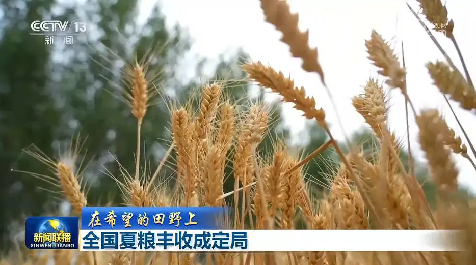

央视网消息：眼下，湖北省秋收开镰已有一周多的时间。水稻收割已经超过四成，玉米收割七成。湖北省通过大力推广新品种水稻，建设高标准农田等一系列措施，为秋粮稳产提供有力支撑。
中稻占据了湖北全年粮食产量的一半以上。在湖北的主产区荆门市，370万亩中稻已经收割四成以上。

王化林说的新品种，是湖北省研发的杂交水稻“华夏香丝”，不仅产量高，还具有抗病、抗倒、抗高温的特性。在荆门漳河镇的一工程示范田内，像“华夏香丝”这样抗旱节水的品种还有20多个，这些水稻新品将在荆门全面推广，确保来年增产增收。
此外，湖北还大力推进高标准农田建设。截至今年6月，已建成3980万亩高标准农田。目前，湖北全省仍有1800多万亩中稻正在有序收割中，预计10月中旬收割完毕。